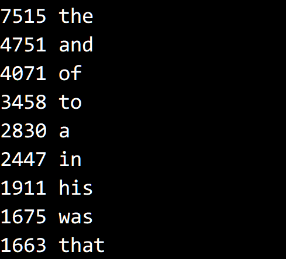

© 2019 《算法（第四版）》C# 题解 | Provided By 沈星繁
搜索解答
目前已完成到 2.5
2.5.8
上次更新：2019-02-11
题目
2.5.8
编写一段程序 Frequency，
从标准输入读取一列字符串并按照字符串出现频率由高到低的顺序打印出每个字符串及其出现次数。
解答
官网实现见：https://algs4.cs.princeton.edu/25applications/Frequency.java.html
用到的数据来自（右键另存为）：https://introcs.cs.princeton.edu/java/data/tale.txt
先把所有单词读入，然后排序，一样的单词会被放在一起，
接下来遍历一遍记录每个单词出现的次数。
然后按照频率排序，倒序输出即可。
定义了一个嵌套类 Record 来记录单词及出现次数，实现的比较器按照出现次数排序。
class Record : IComparable<Record>
{
public string Key { get; set; } // 单词
public int Value { get; set; } // 频率
public Record(string key, int value)
{
this.Key = key;
this.Value = value;
}
public int CompareTo(Record other)
{
return this.Value.CompareTo(other.Value);
}
}
测试结果（前 1% 的单词）：

代码
using System;
using System.IO;
namespace _2._5._8
{
class Program
{
class Record : IComparable<Record>
{
public string Key { get; set; } // 单词
public int Value { get; set; } // 频率
public Record(string key, int value)
{
this.Key = key;
this.Value = value;
}
public int CompareTo(Record other)
{
return this.Value.CompareTo(other.Value);
}
}
static void Main(string[] args)
{
string filename = "tale.txt";
StreamReader sr = new StreamReader(File.OpenRead(filename));
string[] a = sr.ReadToEnd().Split(new char[] { ' ', '\n', '\r' }, StringSplitOptions.RemoveEmptyEntries);
Array.Sort(a);
Record[] records = new Record[a.Length];
string word = a[0];
int freq = 1;
int m = 0;
for (int i = 0; i < a.Length; i++)
{
if (!a[i].Equals(word))
{
records[m++] = new Record(word, freq);
word = a[i];
freq = 0;
}
freq++;
}
records[m++] = new Record(word, freq);
Array.Sort(records, 0, m);
// 只显示频率为前 1% 的单词
for (int i = m - 1; i >= m * 0.99; i--)
Console.WriteLine(records[i].Value + " " + records[i].Key);
}
}
}